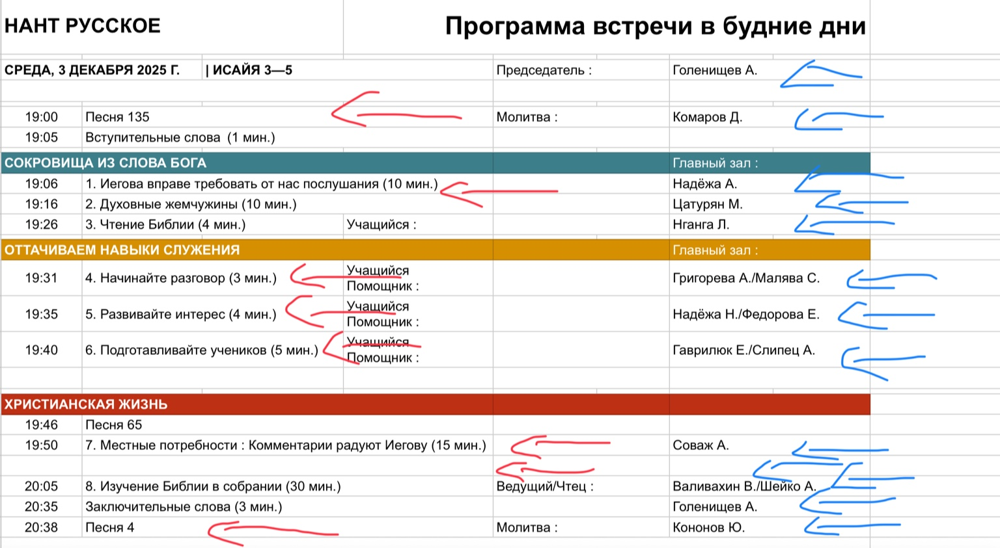

Программа встречи
Редактируй одну неделю, exporte toutes les semaines en PDF (2 par page)
Modifier Président
Modifier Date
Reset → server
Sauvegarder (local)
Exporter PDF
Cliquez sur un champ pour éditer (thème, durée, personne, note). Les modifications sont locales.
Prévisualisation PDF